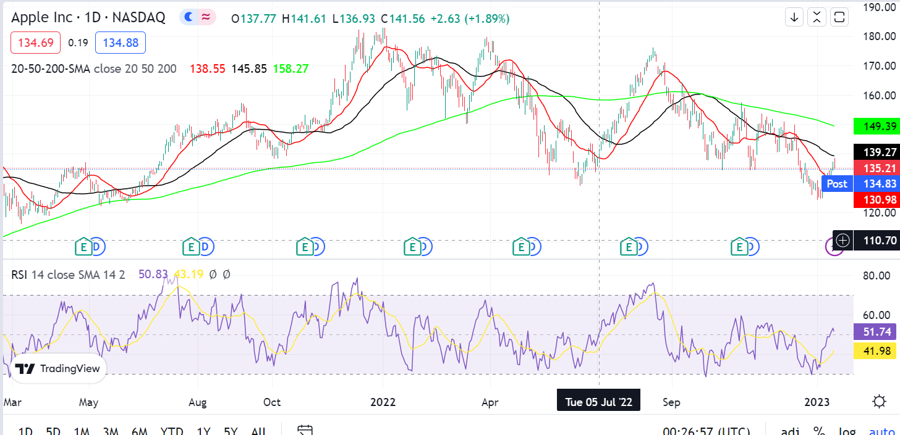
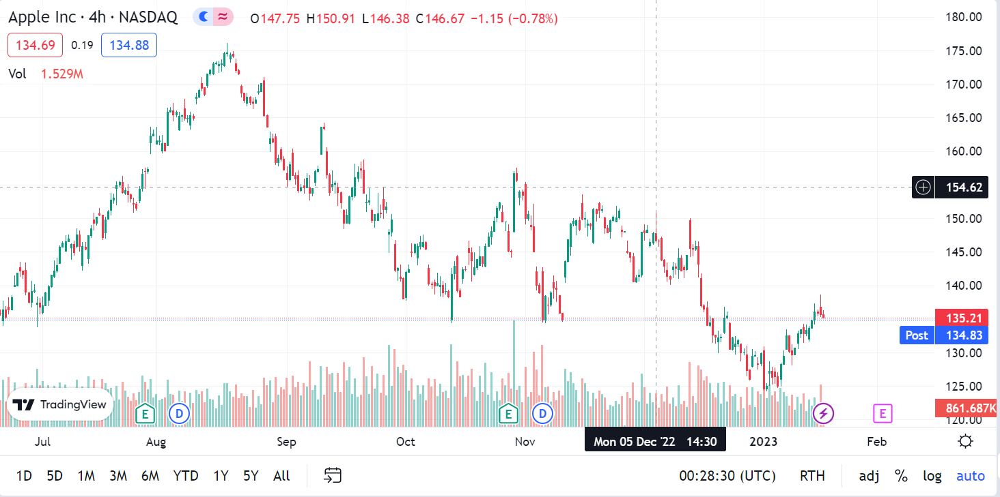

Return
MarketWatch created by Riddhi Katarki
USN : 1BG20AI068
MarketWatch is a price tracker that allows users to track price movements and market behaviour.

Trend Analysis
SMA - Simple Moving Average
The Simple Moving Average(SMA) is an indicator that shows the average price of an asset over a specific time period.
20-SMA denotes the average price over the last 20 days , 50-SMA shows the average price over the past 50 days and so on. The SMA indicator can be used to analyze support and resistance levels of an asset which provides entry and exit points for possible swing trades.

Price Action
RSI - Relative Strength Index
The RSI (Relative Strength Index) is a powerful tool that analyzes the speed and strength of price movements. The RSI ranges from 0-100.
A lower RSI usually less than 30 indicates that an asset is in the oversold region so it helps users in taking up long term positions while a high RSI usually > 90 indicates an overbought momentum thus triggering a sell.
MACD - Moving Average Convergence and Divergence
Moving Average Convergence Divergence (MACD) is a trend-following momentum indicator that shows the relationship between two moving averages of a security's price. Traders use the MACD to identify when bullish or bearish momentum is high to identify entry and exit points for trades.